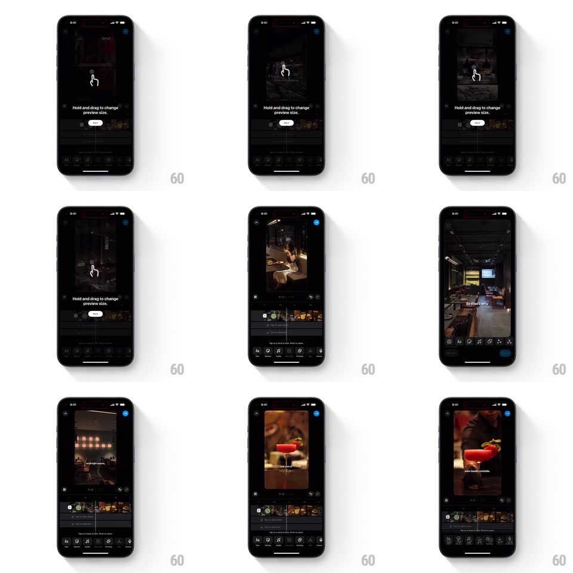

Media
Frame-by-frame

Rebuild this animation 1:1: Instagram's editor gesture coach - a hand tooltip loops a hold-and-drag motion with the caption "Hold and drag to change preview size.", then the real drag fluidly resizes the video preview.

Rebuild this animation 1:1: Instagram's editor gesture coach - a hand tooltip loops a hold-and-drag motion with the caption "Hold and drag to change preview size.", then the real drag fluidly resizes the video preview. ## Integration Integration: stack-agnostic spec - springs given as stiffness/damping, timed motions as duration + curve; map every value to your framework and animation library of choice. ## Scene Dark video editor: a preview canvas with a white hand-pointer glyph at center and the caption "Hold and drag to change preview size." with a Skip pill; editing toolbar at the bottom. After the gesture: the preview fills the screen and the caption overlays the footage. ## Motion spec Pattern: coached gesture loop then live drag-resize, ~2s loop. - Tooltip: the hand presses (scale 0.9, 200ms), holds 400ms, then drags downward 120px (500ms, ease-in-out) as the preview behind it grows (scale 0.8 -> 1); it releases and loops. - Real gesture: on the user's actual hold, the tooltip fades (150ms) and the preview tracks the drag 1:1 - pinching vertical distance scales the preview between 0.6 and 1.0 with corner radius shrinking as it grows (24 -> 0px). - Release: the preview springs to the nearest snap point (spring ~340/22, 300ms). - Skip: fades the tooltip and restores the default preview size (300ms). ## Calibration - During the coached loop the preview actually resizes with the ghost drag - it is not a static illustration. - The caption stays fixed; only the hand and preview move. ## Reduced motion A static caption with a non-animated hand icon. ## Don't miss - The drag is hold-first: the hand visibly presses before it moves. - Preview scale and corner radius are coupled throughout the drag.